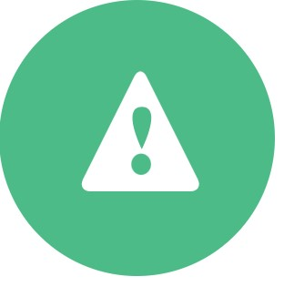

The International Bank for Reconstruction and Development (IBRD) is a global
development cooperative owned by 189 member countries. As the largest
development bank in the world, it supports the World Bank Group’s mission by
providing loans, guarantees, risk management products, and advisory services to
middle-income and creditworthy low-income countries, as well as by coordinating
responses to regional and global challenges.
Created in 1944 to help Europe rebuild after World War II, IBRD joins with IDA, our fund
for the poorest countries, to form the World Bank. They work closely with all
institutions of the World Bank Group and the public and private sectors in developing
countries to reduce poverty and build shared prosperity.
A Partner to Middle-Income Countries
The World Bank Group engages with middle-income countries (MICs) both as clients
and shareholders. These countries are major drivers of global growth, home to major
infrastructure investments, and recipients of a large share of exports from advanced
economies and poorer countries. Many are making rapid economic and social
progress, and they play an ever larger role in finding solutions to global challenges.
But MICs also have more than 70% of the world’s poor people, often in remote areas.
And limited access to private finance makes these countries vulnerable to economic
shocks and the crises that cross borders, including climate change, forced migration,
and pandemics. The World Bank is an essential partner to MICs, which represent more
than 60% of IBRD’s portfolio.
- We provide a combination of financial resources, knowledge, and technical
services.
- Our strategic advice helps governments reform to improve services, encourage
more private investment, and innovate and share solutions.
- We partner with countries as challenges emerge and evolve, through innovative
financial products and a wide range of global forums.
Above all, we help ensure that progress in reducing poverty and broadening prosperity
can be sustained. We place special emphasis on supporting lower-middle-income
countries as they move up the economic chain, graduating from IDA to become clients
of IBRD. We are also expanding capacity to help countries dealing with fragility and
conflict situations. And as a long-term partner, we step up our support to all MICs in
times of crisis.
IBRD’s Services
Through our partnership with MICs and creditworthy poorer countries, IBRD offers
innovative financial solutions, including financial products (loans, guarantees, and risk
management products) and knowledge and advisory services (including on a
reimbursable basis) to governments at the national and subnational levels.
IBRD finances investments across all sectors and provides technical support and
expertise at each stage of a project. IBRD’s resources not only supply borrowing
countries with needed financing, but also serve as a vehicle for global knowledge
transfer and technical assistance.
Advisory services in public debt and asset management help governments, official
sector institutions, and development organizations build institutional capacity to
protect and expand financial resources.
IBRD supports government efforts to strengthen public financial management as well
as improve the investment climate, address service delivery bottlenecks, and
strengthen policies and institutions.

Country Strategies
The Country Partnership Framework guides
how IBRD and other World Bank Group
institutions work with a client country to reach
the twin goals of ending extreme poverty and
increasing shared prosperity in a sustainable
manner.

Products & Services
IBRD lending and advice complement other
World Bank Group efforts to help governments
reduce poverty and spur sustainable growth. In
addition to middle-income countries, IBRD
lends to creditworthy poorer countries that are
also eligible for IDA support.

Financing & Risk
Management
IBRD and other World Bank Group institutions
are innovating to offer a wide range of
insurance, credit enhancement, and hedging
products to help client countries manage
financial risks as they tackle development
challenges.
How IBRD Is Financed
IBRD raises most of its funds in the world's financial markets. This has allowed it to
provide more than $500 billion in loans to alleviate poverty around the world since
1946, with its shareholder governments paying in about $14 billion in capital.
IBRD has maintained a triple-A rating since 1959. This high credit rating allows it to
borrow at low cost and offer middle-income developing countries access to capital on
favorable terms — helping ensure that development projects go forward in a more
sustainable manner, while often complementing or catalyzing private financing.
IBRD earns income every year from the return on its equity and from the small margin
it makes on lending. This pays for World Bank operating expenses, goes into reserves
to strengthen the balance sheet, and provides an annual transfer of funds to IDA, the
fund for the poorest countries.